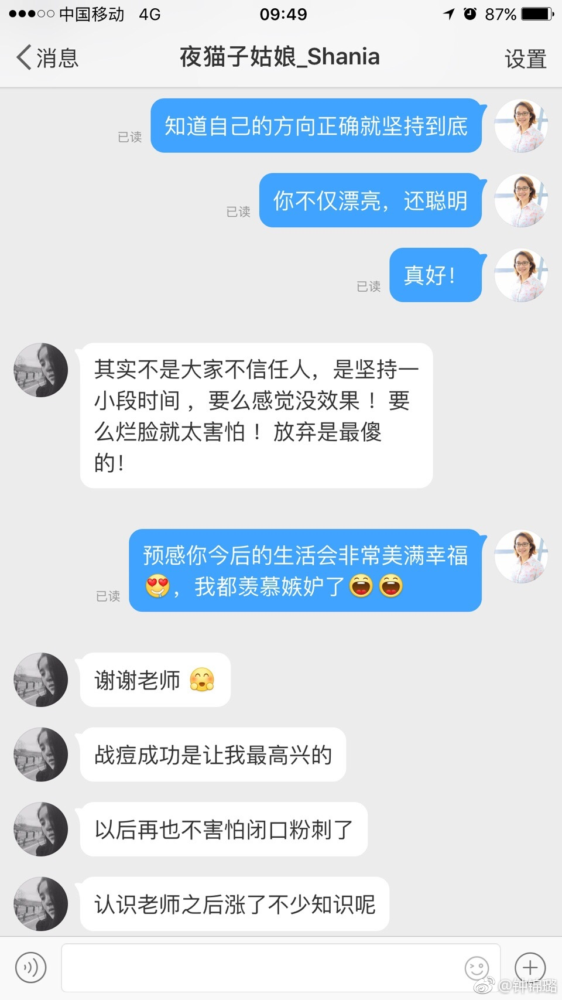

我们爱美商城的用户，确实普遍颜值高哈。
@钟锦璐:
今天我回@夜猫子姑娘_Shania 的私信，开玩笑说会羡慕嫉妒她今后的生活会幸福美满，估计小姑凉没有听懂是什么意思 ：首先她懂得寻求专业人士的帮助，先找到爱美商城了解和购买了博乐达，购买后又把我的微博翻了遍，仔仔细细地了解，有问题能在私信里咨询，在询问的过程中，她又及其知道对方喜欢听什么，先热情地抛出你喜欢听的，然后非常有礼貌地问问题，情商极高。在这个过程中，她懂得甄别信息的真伪，懂得择善的坚持，懂得尊重对方、让对方愿意花时间指导她，而且她又非常漂亮，难得！@Ada李力 @皮肤美容李远宏教授
：首先她懂得寻求专业人士的帮助，先找到爱美商城了解和购买了博乐达，购买后又把我的微博翻了遍，仔仔细细地了解，有问题能在私信里咨询，在询问的过程中，她又及其知道对方喜欢听什么，先热情地抛出你喜欢听的，然后非常有礼貌地问问题，情商极高。在这个过程中，她懂得甄别信息的真伪，懂得择善的坚持，懂得尊重对方、让对方愿意花时间指导她，而且她又非常漂亮，难得！@Ada李力 @皮肤美容李远宏教授
- 